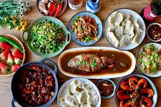
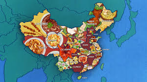

Chinese Cuisine: A Culinary Tradition of Excellence
Chinese cuisine is one of the most renowned and esteemed culinary traditions in the world, offering an extensive range of flavours, textures, and ingredients that have captivated food enthusiasts for centuries...
Historical Origins and Evolution
The roots of Chinese cuisine can be traced back thousands of years...
Principles of Chinese Cuisine
Chinese cuisine is governed by several fundamental principles that ensure harmony in taste, texture, and presentation...
Regional Variations
China's vast geographical expanse and diverse climate conditions have given rise to a plethora of regional cuisines...
Chinese Cuisine in the United Kingdom
The presence of Chinese cuisine in the United Kingdom can be traced back to the 19th century...
Cultural and Philosophical Influence
Chinese cuisine is deeply interwoven with cultural traditions...
Conclusion
Chinese cuisine, with its rich history, diverse regional styles, and intricate culinary principles, remains one of the most fascinating and beloved gastronomic traditions worldwide...